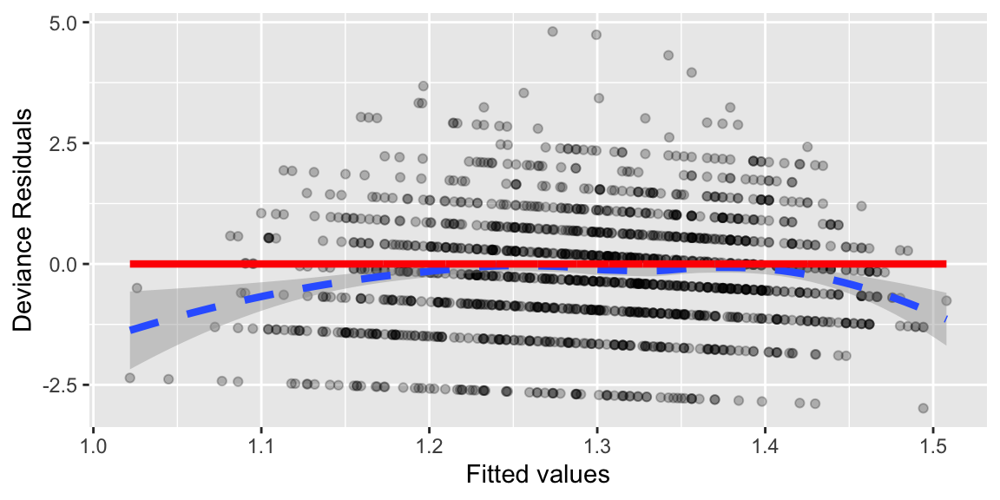
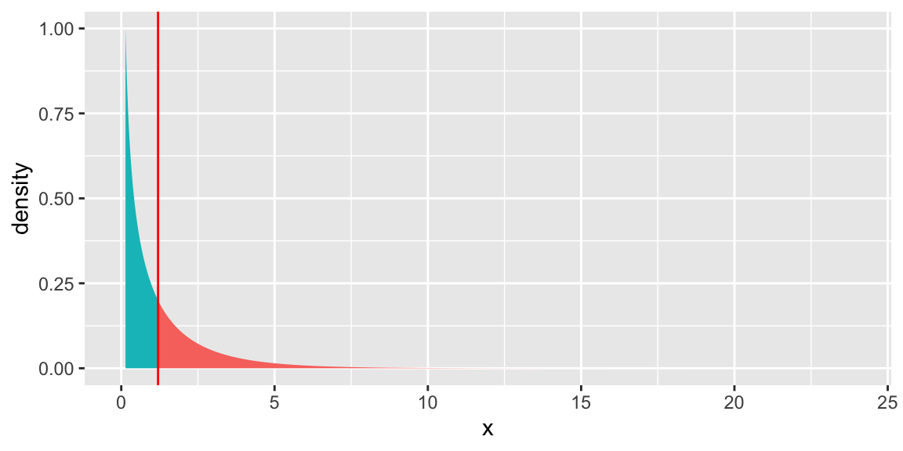

Chapter 6 Poisson Regression
These notes provide a summary of Chapter 4 in Beyond Multiple Linear Regression by Roback and Legler. Much of the code that appears here comes from the textbookâs Github repository.
6.1 Modeling Counts
6.1.1 Case Study: Household Size in the Philippines
From Roback & Leglerâs text:
How many other people live with you in your home? The number of people sharing a house differs from country to country and often from region to region. International agencies use household size when determining needs of populations, and the household sizes determine the magnitude of the household needs.
The Philippine Statistics Authority (PSA) spearheads the Family Income and Expenditure Survey (FIES) nationwide. The survey, which is undertaken every three years, is aimed at providing data on family income and expenditure, including levels of consumption by item of expenditure. Our data, from the 2015 FIES, is a subset of 1500 of the 40,000 observations. Our data set focuses on five regions: Central Luzon, Metro Manila, Ilocos, Davao, and Visayas.
6.1.3 Questions of Interest
Does household size vary between regions of the country?
At what age are heads of households in the Philippines most likely to find the largest number of people in their household?
Is this association similar for poorer households (measured by the presence of a roof made from predominantly light/salvaged materials)?
6.1.4 The Data
fHH1 <- read_csv("https://raw.githubusercontent.com/proback/BeyondMLR/master/data/fHH1.csv")The data include the following variables:
location= where the house is located (Central Luzon, Davao Region, Ilocos Region, Metro Manila, or Visayas)age= the age of the head of householdtotal= the number of people in the household other than the headnumLT5= the number in the household under 5 years of ageroof= the type of roof in the household (either Predominantly Light/Salvaged Material, or Predominantly Strong Material, where stronger material can sometimes be used as a proxy for greater wealth)
6.1.5 First 5 Rows
head(fHH1)# A tibble: 6 Ã 6
...1 location age total numLT5 roof
<dbl> <chr> <dbl> <dbl> <dbl> <chr>
1 1 CentralLuzon 65 0 0 Predominantly Strong Material
2 2 MetroManila 75 3 0 Predominantly Strong Material
3 3 DavaoRegion 54 4 0 Predominantly Strong Material
4 4 Visayas 49 3 0 Predominantly Strong Material
5 5 MetroManila 74 3 0 Predominantly Strong Material
6 6 Visayas 59 6 0 Predominantly Strong Material6.1.6 Household Size by Region
fHH1 %>% group_by(location) %>%
summarise(mean=mean(total), sd=sd(total),
var=var(total), n=n())## # A tibble: 5 Ã 5
## location mean sd var n
## <chr> <dbl> <dbl> <dbl> <int>
## 1 CentralLuzon 3.40 2.04 4.15 224
## 2 DavaoRegion 3.39 2.17 4.72 187
## 3 IlocosRegion 3.59 2.32 5.40 191
## 4 MetroManila 3.71 2.21 4.86 297
## 5 Visayas 3.90 2.57 6.60 6016.1.7 Household Size by Region Plots
ggplot(fHH1, aes(total)) +
geom_histogram(binwidth = .25, color = "black",
fill = "white") + facet_wrap(~location) +
xlab("Number in the house excluding head of household") +
ylab("Count of households")- responses range from 0 to 16 and are most often between 1 and 5
- number of people in a house is right skewed and cannot be be negative
6.1.8 Modeling Household Size
Let \(Y_i\) represent the size of household \(i\). Weâll use location as an explanatory variable.
In this example, weâll treat location as a fixed effect, since weâre interested in comparing and drawing conclusions about the five regions.
6.1.9 Inappropriate LLSR Model
On first thought, we might consider an ordinary LLSR model of the form
\[ Y_i = \beta_0 + \beta_1\textrm{locationDavao}_i + \beta_2\textrm{locationIlocos}_i + \\\beta_3\textrm{locationMetroManila}_i + \beta_4\textrm{locationVisayas}_i + \epsilon_i \]
where \(\epsilon_i\sim\mathcal{N}(0,\sigma^2)\)
6.1.10 LLSR Model R Output
M1 <- lm(data=fHH1, total ~ location)
summary(M1)##
## Call:
## lm(formula = total ~ location, data = fHH1)
##
## Residuals:
## Min 1Q Median 3Q Max
## -3.9018 -1.7071 -0.3904 1.2929 12.4136
##
## Coefficients:
## Estimate Std. Error t value Pr(>|t|)
## (Intercept) 3.40179 0.15678 21.698 < 0.0000000000000002 ***
## locationDavaoRegion -0.01141 0.23243 -0.049 0.96085
## locationIlocosRegion 0.18460 0.23110 0.799 0.42454
## locationMetroManila 0.30528 0.20765 1.470 0.14172
## locationVisayas 0.50004 0.18369 2.722 0.00656 **
## ---
## Signif. codes: 0 '***' 0.001 '**' 0.01 '*' 0.05 '.' 0.1 ' ' 1
##
## Residual standard error: 2.346 on 1495 degrees of freedom
## Multiple R-squared: 0.00777, Adjusted R-squared: 0.005115
## F-statistic: 2.927 on 4 and 1495 DF, p-value: 0.019996.1.11 LLSR Assumptions
The LLSR model assumes that in region \(j\), household sizes are:
- Independent
- Normally distributed with mean \(\beta_0 + \beta_j\) and variance \(\sigma^2\)
- Variance \(\sigma^2\) is constant between regions
The linearity assumption is not relevant here since the explanatory variable is categorical.
6.1.12 Distribution in Visayas Region
According to the model, household sizes in the Visayas region are normally distributed with mean \(\hat{\beta}_0 + \hat{\beta}_4 = 3.9\) and standard deviation \(\hat{\sigma} = 2.346\).
ggplot(fHH1 %>% filter(location=="Visayas"), aes(total)) +
geom_histogram(aes(y = ..density..), binwidth = 0.25, colour = "black") +
stat_function(fun = dnorm, args = list(mean = 3.9, sd = 2.346), size=1, color="red") +
xlab("Number in the house excluding head of household") +
ylab("Count of households") + xlim(c(-5,20))Problems
The normal distribution:
- allows for negative household sizes
- allows for non-integer household sizes
- underestimates probability of household sizes above 10 (fails to accunt for right-skewness)
6.1.13 Normal Quantile Quantile Plot
A normal quantile-quantile plot graphs the quantiles of the model residuals against the expected quantiles from a normal distribution. If the normal distribution is appropriate, the points should lie close to a diagonal line.
ggplot(data=data.frame(M1$residuals), aes(sample = scale(M1$residuals))) + stat_qq() + stat_qq_line() + xlab("Normal Quantiles") + ylab("Residual Quantiles") + ggtitle("QQ Plot")
Residual quantiles are higher than expected on the left (since there are no negative household sizes), and on the right (since some households are larger than expected).
The normal distribution is a poor fit.
6.2 Poisson Regression Models
6.2.1 The Poisson Distribution
A Poisson random variable is a discrete random variable that takes on nonnegative integers. It depends on parameter \(\lambda >0\),representing the mean.
Poisson random variables are useful when modeling counts.
Notation: \(Y\sim Pois(\lambda)\), Â Â Probability Mass Function: \(\text{P}(Y=y) = e^{-\lambda}\lambda^y/y!\) Â Â
For \(\lambda=1\),
\[ Pr(Y=0) = e^{-1}1^0/0! = e^{-1}\approx(0.3679) \]
\[ Pr(Y=1) = e^{-1}1^1/1! = e^{-1}\approx(0.3679) \]
\[ Pr(Y=2) = e^{-1}1^2/2! = e^{-1}/2\approx(0.1839) \]
\[ Pr(Y=3) = e^{-1}1^3/3! = e^{-1}/6\approx(0.0613) \]
6.2.2 Poisson Distribution for \(\lambda=1\)
df <- data.frame(x = 0:10, y = dpois(0:10, 1))
ggplot(df, aes(x = x, y = y)) + geom_bar(stat = "identity", col = "white", fill = "blue") +
scale_y_continuous(expand = c(0.01, 0)) + scale_x_continuous(breaks=(0:10)) + xlab("x") + ylab(expression(paste("p(x|", theta, ")"))) + ggtitle(expression(paste(lambda, "=1"))) + theme_bw() +
theme(plot.title = element_text(size = rel(1.2), vjust = 1.5))Mean = 1
Variance = 1
6.2.3 Poisson Distribution for \(\lambda\in\{1,3,5\}\)

Poisson distributions are right-skewed, especially when \(\lambda\) is small.
In a Poisson distribution, the mean is equivalent to its variance (both are equal to \(\lambda\)).
6.2.4 Connecting Expected Response to Explatory Variables
In a LLSR model, for a given set of values/categories for explanatory variables \(X_1, \ldots, X_p\), the response variable is normally distributed with mean:
\[E(Y) = \mu = \beta_0+\beta_1X_{1} + \ldots + \beta_pX_p\]
In a Poisson regression model, we donât want to assume
\[E(Y) = \lambda = \beta_0+\beta_1X_{1} + \ldots + \beta_pX_p\]
because this would allow \(\lambda\) to be negative.
Instead, we assume
\[E(Y) = \lambda = e^{\beta_0+\beta_1X_{1} + \ldots + \beta_pX_p},\] ensuring \(\lambda>0\).
Equivalently, we assume
\[ \text{log}(E(Y)) = \text{log}(\lambda) = \beta_0+\beta_1X_{1} + \ldots + \beta_pX_p\].
To summarize:
* a LLSR model assumes the expected response is a linear function of the explanatory variables.
* a Poisson regression model assumes the log of the expected response is a linear function of the explanatory variables.
6.2.5 Poisson Regression Assumptions
In a Poisson regression model, we assume:
- Poisson Response The response variable is a count per unit of time or space, described by a Poisson distribution.
- Independence The observations must be independent of one another, after accounting for fixed effects.
- Mean=Variance For given value(s) or category(ies) of the explanatory variable(s), the response variable must follow a distribution whose mean is equal to its variance.
- Linearity For numeric explanatory variable(s) x, the log of the mean rate, log(\(\lambda\)), must be a linear function of x.
6.3 Poisson Model for Household Size
6.3.1 Poisson Regression Model for Location
MP1 = glm(total ~ location, family = poisson, data = fHH1)
summary(MP1)
Call:
glm(formula = total ~ location, family = poisson, data = fHH1)
Deviance Residuals:
Min 1Q Median 3Q Max
-2.7935 -0.9725 -0.2163 0.6373 4.7986
Coefficients:
Estimate Std. Error z value Pr(>|z|)
(Intercept) 1.22430 0.03623 33.796 < 0.0000000000000002 ***
locationDavaoRegion -0.00336 0.05375 -0.063 0.95016
locationIlocosRegion 0.05285 0.05265 1.004 0.31554
locationMetroManila 0.08594 0.04712 1.824 0.06819 .
locationVisayas 0.13714 0.04170 3.289 0.00101 **
---
Signif. codes: 0 '***' 0.001 '**' 0.01 '*' 0.05 '.' 0.1 ' ' 1
(Dispersion parameter for poisson family taken to be 1)
Null deviance: 2362.5 on 1499 degrees of freedom
Residual deviance: 2344.9 on 1495 degrees of freedom
AIC: 6727.8
Number of Fisher Scoring iterations: 56.3.2 Interpreting Model Parameters in Poisson Regression
Given location, the expected household size is given by
\[ log(E(Y)) = log(\lambda) = \beta_0 + \beta_1\textrm{locationDavao}_i + \beta_2\textrm{locationIlocos}_i + \\ \beta_3\textrm{locationMetroManila}_i + \beta_4\textrm{locationVisayas}_i \]
In region CentralLuzon (CL) (the intercept): \(log(E(Y)) = log(\lambda_{CL}) = \beta_0\)
In region Visayas (the intercept): \(log(E(Y)) = log(\lambda_{V}) = \beta_0 + \beta_4\)
\[ \begin{equation} \begin{split} log(\lambda_{CL}) &= \beta_0 \\ log(\lambda_{V}) &= \beta_0 + \beta_4 \\ log(\lambda_{V})-log(\lambda_{CL}) &= \beta_4 \\ log \left(\frac{\lambda_{V}}{\lambda_{CL}}\right) &= \beta_4\\ \frac{\lambda_{V}}{\lambda_{CL}} &= e^{\beta_4} \end{split} \end{equation} \]
The expected household size in region Visayas is \(e^{\beta_4}\) times as great as in region CentralLuzon.
We estimate that on average, households in the Visayas region have \(e^{0.13714}=1.1469\) times as many (or 14.7% more) people as households in the Central Luzon. region, excluding head of household.
The small p-value provides strong evidence of differences in household size between the two regions.
6.3.3 Wald-Based Confidence Intervals for Difference
In Poisson regression, assuming sample size is large enough, regression coefficients follow normal distributions, so we can calculate confidence intervals for \(\beta_j\) using the formula \(\hat\beta_j-Z^*\cdot SE(\hat\beta_j)\).
Tests and intervals based on these estimates are called Wald-Based.
A 95% CI provides a range of plausible values for \(\beta_4\) and can be constructed:
\[(\hat\beta_4-Z^*\cdot SE(\hat\beta_4), \quad \hat\beta_4+Z^*\cdot SE(\hat\beta_4))\] \[(0.13714-1.96*0.04170, \quad 0.13714+1.96*0.04170)\] \[ (0.0554, 0.2189). \]
We are 95% confident that on average, households in the Visayas region have between \(e^{0.0554}=1.056\) and \(e^{0.2189}=1.24\) times as many people as households in the Central Luzon region, excluding head of household. Equivalently, households in Visayas are expected to have between 5.6% and 24% more people, on average, than those in Central Luzon.
# CI for betas using profile likelihood
confint(MP1)## 2.5 % 97.5 %
## (Intercept) 1.152446927 1.2944708
## locationDavaoRegion -0.108912941 0.1018527
## locationIlocosRegion -0.050467957 0.1559685
## locationMetroManila -0.006175889 0.1785772
## locationVisayas 0.055973241 0.2194536exp(confint(MP1))## 2.5 % 97.5 %
## (Intercept) 3.1659302 3.649064
## locationDavaoRegion 0.8968085 1.107220
## locationIlocosRegion 0.9507844 1.168789
## locationMetroManila 0.9938431 1.195515
## locationVisayas 1.0575694 1.2453966.3.4 Mean = Variance Assumption
Recall the Poisson regression model requires the assumption that \(\text{Mean} = \text{Variance} = \lambda\).
We can check whether this is reasonable by examining the mean and variance of household sizes in each region.
fHH1 %>% group_by(location) %>%
summarise(mean=mean(total), sd=sd(total),
var=var(total), n=n())## # A tibble: 5 Ã 5
## location mean sd var n
## <chr> <dbl> <dbl> <dbl> <int>
## 1 CentralLuzon 3.40 2.04 4.15 224
## 2 DavaoRegion 3.39 2.17 4.72 187
## 3 IlocosRegion 3.59 2.32 5.40 191
## 4 MetroManila 3.71 2.21 4.86 297
## 5 Visayas 3.90 2.57 6.60 601We see that variances are slightly large than the mean, but not considerably larger, so this assumption might be reasonable.
Weâll soon look at what to do when the mean = variance assumption is clearly violated.
6.4 Poisson Model with Multiple Explanatory Variables
6.4.1 Accounting for Age of Head of Household
We add age of the head of household as an explanatory variable in the model.
\[ log(E(Y)) = log(\lambda) = \beta_0 + \beta_1\text{Age}_i + \beta_2\textrm{locationDavao}_i + \\ \beta_3\textrm{locationIlocos}_i + \beta_4\textrm{locationMetroManila}_i + \beta_5\textrm{locationVisayas}_i \]
6.4.2 R Output for Model with Age
MP2 = glm(total ~ age + location, family = poisson, data = fHH1)
summary(MP2)
Call:
glm(formula = total ~ age + location, family = poisson, data = fHH1)
Deviance Residuals:
Min 1Q Median 3Q Max
-2.9851 -0.9664 -0.1559 0.6194 4.8082
Coefficients:
Estimate Std. Error z value Pr(>|z|)
(Intercept) 1.472332 0.061922 23.777 < 0.0000000000000002 ***
age -0.004598 0.000940 -4.891 0.000001 ***
locationDavaoRegion -0.014191 0.053800 -0.264 0.79196
locationIlocosRegion 0.052387 0.052652 0.995 0.31975
locationMetroManila 0.072806 0.047195 1.543 0.12291
locationVisayas 0.127532 0.041742 3.055 0.00225 **
---
Signif. codes: 0 '***' 0.001 '**' 0.01 '*' 0.05 '.' 0.1 ' ' 1
(Dispersion parameter for poisson family taken to be 1)
Null deviance: 2362.5 on 1499 degrees of freedom
Residual deviance: 2320.8 on 1494 degrees of freedom
AIC: 6705.7
Number of Fisher Scoring iterations: 56.4.3 Interpreting Coefficients for Numeric Explanatory Variable
Consider two heads of household in CL where the first person has age \(a\), and the second has age \(a+1\). Assume both live in Central Luzon, although region doesnât matter as long as itâs the same.
In region Central Luzon (CL): \(log(E(Y)) = log(\lambda_{CL}) = \beta_0 + \beta_1\text{Age}\).
Age \(a\): \(log(E(Y)) = log(\lambda_{a}) = \beta_0 + \beta_1a\)
Age \(a+1\): \(log(E(Y)) = log(\lambda_{a+1}) = \beta_0 + \beta_1(a+1)\)
\[ \begin{equation} \begin{split} log(\lambda_{a+1})-log(\lambda_a) &= \beta_1 \\ log \left(\frac{\lambda_{a+1}}{\lambda_a}\right) &= \beta_1\\ \frac{\lambda_{a+1}}{\lambda_a} &= e^{\beta_1} \end{split} \end{equation} \]
For each one-year increase in age of head of household, houshold size is expected to multipy by a factor of \(e^{\beta_1}\), assuming region is held constant.
Assuming weâre comparing households in the same region, for each one-year increase in age of head of household, average household size is expected to multiply be a factor of \(e^{-0.004598} = 0.9954\).
Assuming weâre comparing households in the same region, for each y-year increase in age of head of household, average household size is expected to multiply be a factor of \(e^{-0.004598y}\).
- For example expected household size for a 50 year old head of house is expected to be \(e^{-.004598*10}=0.9551\) times that of a 40 year old head of house (an estimated 4.5% decrease), assuming region is held constant.
6.4.4 Mean = Variance Assumption
This model depends on the assumption that for a given region and age, mean is equal to variance.
Weâll examine whether this is reasonable, using the largest region, Visayas.
Since we have limited obsevations for specific ages, weâll group people in similar age ranges together.
fHH1V <- fHH1 %>% filter(location=="Visayas")
cuts = cut(fHH1V$age,
breaks=c(15,20,25,30,35,40,45,50,55,60,65,70))
ageGrps <- data.frame(cuts,fHH1V)
ggplot(data = ageGrps, aes(x = total)) +
geom_histogram(binwidth = .25, color = "black",
fill = "white") +
facet_wrap(cuts) +
xlab("Household size")Figure 6.3: Distribution of household sizes by age group of the household head.
# Mean = Variance
table1chp4<- ageGrps %>% group_by(cuts) %>%
summarise(mnNum= mean(total),varNum=var(total),n=n())
kable(table1chp4, booktabs=T,
caption="Compare mean and variance of household size within each age group.",
col.names = c("Age Groups", "Mean", "Variance", "n")) %>%
kable_styling(full_width = F)| Age Groups | Mean | Variance | n |
|---|---|---|---|
| (15,20] | 3.000000 | NA | 1 |
| (20,25] | 2.142857 | 2.1428571 | 7 |
| (25,30] | 3.260870 | 0.8379447 | 23 |
| (30,35] | 3.571429 | 2.3972125 | 42 |
| (35,40] | 4.423729 | 5.4208065 | 59 |
| (40,45] | 4.776316 | 5.6159649 | 76 |
| (45,50] | 4.690476 | 6.1921974 | 84 |
| (50,55] | 4.388889 | 7.8748044 | 72 |
| (55,60] | 3.590164 | 7.6792350 | 61 |
| (60,65] | 3.562500 | 7.2023810 | 64 |
| (65,70] | 3.609756 | 8.4439024 | 41 |
| NA | 2.436620 | 6.0209256 | 71 |
There is some concern about the validity of the assumption, as variance appears to increase as age increases.
Weâll talk soon about ways to address, this but for now, since the violations are not too severe, weâll proceed with the current model.
6.5 Deviance and Model Comparison
6.5.1 Accounting for Nonlinear Trend
Recall that the Poisson regression model assumes that the log of the expected household counts is a linear function of region and head of householdâs age.
\[ log(E(Y)) = log(\lambda) = \beta_0 + \beta_1\text{Age}_i + \beta_2\textrm{locationDavao}_i + \\ \beta_3\textrm{locationIlocos}_i + \beta_4\textrm{locationMetroManila}_i + \beta_5\textrm{locationVisayas}_i \]
We plot the relationship between log(count) and age for each region.
## Checking linearity assumption: Empirical log of the means plot
sumStats <- fHH1 %>% group_by(age, location) %>%
summarise(mntotal = mean(total),
logmntotal = log(mntotal), n=n())
ggplot(sumStats, aes(x=age, y=logmntotal)) +
geom_point()+
geom_smooth(method = "loess", size = 1.5)+
facet_wrap(~location) +
xlab("Age of head of the household") +
ylab("Log of the mean number in the house") The relationship appears to be quadratic, rather than linear. We should add a quadratic term to our model.
The effect of age on log(count) appears to be roughly the same in each region. If it werenât, we would need to add interaction terms to the model.
6.5.2 Quadratic Poisson Regresson Model
fHH1 <- fHH1 %>% mutate(age2 = age*age)MP3 <- glm(total ~ age + age2 + location, family = poisson, data = fHH1)
summary(MP3)##
## Call:
## glm(formula = total ~ age + age2 + location, family = poisson,
## data = fHH1)
##
## Deviance Residuals:
## Min 1Q Median 3Q Max
## -2.9781 -0.9278 -0.1149 0.5924 5.0424
##
## Coefficients:
## Estimate Std. Error z value Pr(>|z|)
## (Intercept) -0.3843338 0.1820919 -2.111 0.03480 *
## age 0.0703628 0.0069051 10.190 < 0.0000000000000002 ***
## age2 -0.0007026 0.0000642 -10.944 < 0.0000000000000002 ***
## locationDavaoRegion -0.0193872 0.0537827 -0.360 0.71849
## locationIlocosRegion 0.0609820 0.0526598 1.158 0.24685
## locationMetroManila 0.0544801 0.0472012 1.154 0.24841
## locationVisayas 0.1121092 0.0417496 2.685 0.00725 **
## ---
## Signif. codes: 0 '***' 0.001 '**' 0.01 '*' 0.05 '.' 0.1 ' ' 1
##
## (Dispersion parameter for poisson family taken to be 1)
##
## Null deviance: 2362.5 on 1499 degrees of freedom
## Residual deviance: 2187.8 on 1493 degrees of freedom
## AIC: 6574.7
##
## Number of Fisher Scoring iterations: 5We can assess the importance of the quadratic term in two ways. First, the p-value for the Wald-type statistic for age\(^2\) is statistically significant (Z = -11.058, p < 0.001). Another approach is to perform a drop-in-deviance test.
6.5.3 Residuals for Poisson Models
Residuals measure how far observations lie from their expectation, under the model.
The residuals for linear least squares regression have the form:
\[ \begin{align*} \textrm{LLSR residual}_i &= \textrm{obs}_i - \textrm{fit}_i \nonumber \\ &={Y_i-\hat{\mu}_i} \nonumber \\ &= Y_i-(\hat{\beta}_0 +\hat{\beta}_1 X_i) \end{align*} \]
This calculation wouldnât make sense in Poisson regression because itâs \(log(E(Y))\), rather than \(E(Y)\) that is a linear function of the explanatory variables.
Instead, we use the following quantity, called deviance residual, to quantify the closeness of an observed value to its expectation under the model:
\[ \textrm{deviance residual}_i = \textrm{sign}(Y_i-\hat{\lambda}_i) \sqrt{ 2 \left[Y_i log\left(\frac{Y_i}{\hat{\lambda}_i}\right) -(Y_i - \hat{\lambda}_i) \right]} \] where \(\textrm{sign}(x)\) is defined such that:
\[ \textrm{sign}(x) = \begin{cases} 1 & \textrm{if }\ x > 0 \\ -1 & \textrm{if }\ x < 0 \\ 0 & \textrm{if }\ x = 0\end{cases}\]
When \(Y_i\) is close to \(\hat{\lambda}_i\), then \(\left(\frac{Y_i}{\hat{\lambda}_i}\right)\) is close to 1 and \(log\left(\frac{Y_i}{\hat{\lambda}_i}\right)\) is close to 0. Likewise \((Y_i - \hat{\lambda}_i)\) is close to 0. Thus, the deviance residual is small.
As \(Y_i\) gets farther from \(\hat{\lambda}_i\), the deviance residual increases.
6.5.4 Plot of Deviance Residuals for First-Order Poisson Model
# Residual plot for the first order model
## Log scale
Pred = predict(MP2) # log scale
Resid = resid(MP2) # linear model
Residdf = data.frame(Pred,Resid)
ggplot(Residdf,aes(x=Pred, y=Resid)) +
geom_point(alpha = .25)+
geom_smooth(method = "loess", size = 1.5, linetype = 2)+
geom_line(y=0, size=1.5, col="red")+
xlab("Fitted values") +
ylab("Deviance Residuals") 
A plot of the deviance residuals versus predicted responses for the first order model exhibits curvature, supporting the idea that the model may improved by adding a quadratic term.
6.5.5 Plot of Deviance Residuals for Quadratic Poisson Model
# Residual plot for the first order model
## Log scale
Pred = predict(MP3) # log scale
Resid = resid(MP3) # linear model
Residdf = data.frame(Pred,Resid)
ggplot(Residdf,aes(x=Pred, y=Resid)) +
geom_point(alpha = .25)+
geom_smooth(method = "loess", size = 1.5, linetype = 2)+
geom_line(y=0, size=1.5, col="red")+
xlab("Fitted values") +
ylab("Deviance Residuals") The quadratic trend disappears when using the quadratic model, suggesting the model is better capturing the trend in the data.
6.5.6 Residual Deviance for a Model
A modelâs residual deviance is the sum of the squares of the deviance residuals.
residual deviance \(=\sum (\textrm{deviance residual})^2_i\).
We can use residual deviance to compare models in a manner similar to the ANOVA lack of fit tests we use in LLSR.
6.5.7 Drop-in-Deviance Test
Assume that reduced is nested in larger model. That is, every term in the reduced model is also in the larger model.
A drop-in-deviance test can be used to test the hypotheses:
Null Hypothesis: Reduced model sufficienty explains variability in \(Y\).
Alternative Hypothesis: Larger model better explains variability in \(Y\).
We can calculate a test statistic by taking the difference in residual deviances between the two models, divided by the difference in the number of parameters.
\[ W=\frac{\text{Drop in Deviance}}{\text{Difference in # Parameters}} \]
When the null hypothesis is true, W follows a \(\chi^2\) distribution with degrees of freedom equal to the difference in number of parameters between the two models.
We can compare the observed drop in deviance to the \(\chi^2\) distribution to calculate a p-value.
6.5.8 Drop-in-Deviance Test
anova(MP2, MP3, test = "Chisq")Analysis of Deviance Table
Model 1: total ~ age + location
Model 2: total ~ age + age2 + location
Resid. Df Resid. Dev Df Deviance Pr(>Chi)
1 1494 2320.8
2 1493 2187.8 1 133.04 < 0.00000000000000022 ***
---
Signif. codes: 0 '***' 0.001 '**' 0.01 '*' 0.05 '.' 0.1 ' ' 1\(H_0\): log(\(\lambda\))=\(Y_i = \beta_0 + \beta_1\text{Age} + \beta_2\textrm{locationDavao}_i + \\ \beta_3\textrm{locationIlocos}_i + \beta_4\textrm{locationMetroManila}_i + \beta_5\textrm{locationVisayas}_i\) (reduced model)
\(H_A:\) log(\(\lambda\))=\(Y_i = \beta_0 + \beta_1\text{Age} + \text{Age}^2 + \beta_2\textrm{locationDavao}_i + \\ \beta_3\textrm{locationIlocos}_i + \beta_4\textrm{locationMetroManila}_i + \beta_5\textrm{locationVisayas}_i\) (larger model)
- The first order model has a residual deviance of 2320.8 with 1494 df
- The quadratic model has a residual deviance of 2187.8 with 1493 df.
- If the null hypothesis is correct, the drop in deviance would follow a \(\chi^2\) distribution with 1 degree of freedom. The probability of observing a value as extreme as 133.04 on such a distribution is essentially 0, so the data provide significant support for including the quadratic term.
6.5.9 Visual of \(\chi^2\) Test
gf_dist("chisq", df = 1, geom = "area", fill="turquoise") +
geom_vline(xintercept=133.04, colour="red") + theme(legend.position="none") + ylim(c(0,0.1))
If the null hypothesis is correct, the drop in deviance would follow a \(\chi^2\) distribution with 1 degree of freedom. The probability of observing a value as extreme as 133.04 on such a distribution is essentially 0, so the data provide significant support for including the quadratic term.
6.5.10 Adding Roofing Material to Model
We also consider whether there is evidence of differences in household size between the two roofing material types, which might be used to measure household wealth.
MP4 <- glm(total ~ age + age2 + location + roof,
family = poisson, data = fHH1)
summary(MP4)##
## Call:
## glm(formula = total ~ age + age2 + location + roof, family = poisson,
## data = fHH1)
##
## Deviance Residuals:
## Min 1Q Median 3Q Max
## -2.9900 -0.9281 -0.1070 0.5912 5.0255
##
## Coefficients:
## Estimate Std. Error z value
## (Intercept) -0.42855992 0.18652834 -2.298
## age 0.07040402 0.00690376 10.198
## age2 -0.00070343 0.00006419 -10.958
## locationDavaoRegion -0.01655038 0.05384310 -0.307
## locationIlocosRegion 0.06298529 0.05269029 1.195
## locationMetroManila 0.05321914 0.04721442 1.127
## locationVisayas 0.11683456 0.04196452 2.784
## roofPredominantly Strong Material 0.04751679 0.04358666 1.090
## Pr(>|z|)
## (Intercept) 0.02159 *
## age < 0.0000000000000002 ***
## age2 < 0.0000000000000002 ***
## locationDavaoRegion 0.75855
## locationIlocosRegion 0.23194
## locationMetroManila 0.25967
## locationVisayas 0.00537 **
## roofPredominantly Strong Material 0.27564
## ---
## Signif. codes: 0 '***' 0.001 '**' 0.01 '*' 0.05 '.' 0.1 ' ' 1
##
## (Dispersion parameter for poisson family taken to be 1)
##
## Null deviance: 2362.5 on 1499 degrees of freedom
## Residual deviance: 2186.6 on 1492 degrees of freedom
## AIC: 6575.5
##
## Number of Fisher Scoring iterations: 5anova(MP3, MP4, test = "Chisq")Analysis of Deviance Table
Model 1: total ~ age + age2 + location
Model 2: total ~ age + age2 + location + roof
Resid. Df Resid. Dev Df Deviance Pr(>Chi)
1 1493 2187.8
2 1492 2186.6 1 1.2024 0.2728The drop in deviance is small when adding roof type to the model, and the large p-value does not provide evidence that roof type is associated with household size.
6.5.11 Visual of \(\chi^2\) Test for Roof
gf_dist("chisq", df = 1, geom = "area", fill = ~ !(x > 1.2)) +
geom_vline(xintercept=1.2, colour="red") + theme(legend.position="none") + ylim(c(0,1))
6.5.12 Goodness-of-Fit
We can also use a modelâs residual deviance to test whether it adequtely fits the data.
Null Hypothesis: The model adequately fits the data
Alternative Hypothesis: The model does not adequately fit the data
When the null hypothesis is true, the modelâs residual deviance follows a \(\chi^2\) distribution with \(n-p\) degrees of freedom, where \(p\) is number of parameters in the model.
MP3$deviance## [1] 2187.8MP3$df.residual## [1] 14931-pchisq(MP3$deviance, MP3$df.residual) [1] 0gf_dist("chisq", df = 1493, geom = "area", fill = "turquoise") +
geom_vline(xintercept=2187.8, colour="red") + theme(legend.position="none") + ylim(c(0,0.01))
The small p-value indicates that the quadratic model does not adequately fit the data.
Weâve already counted for the quadratic trend, and determined that roof material does not help explain variability in household size.
It appears that the deficiency is not with the structure of the modelâs estimated response, but rather with itâs ability to account for variability.
Recall that variance appeared to increase with age, a violation of the Mean=Variance assumption.
6.6 Overdisperson
6.6.1 Quasi-Poisson Model
Overdispersion occurs when there is more variability in the distribution of a response variable than a Poisson model would expect, given the value(s) and category(ies) of explanatory variable(s). Recall that the Poisson model assumes Mean=Variance.
When data are overdispersed, a Poisson regression model will underestimate standard errors, producing confidence intervals that are too narrow, and p-values that are too small.
We can estimate a dispersion parameter, \[ \hat{\phi}=\frac{\displaystyle\sum\left(\frac{Y_i-\hat{\lambda}_i}{\sqrt{\hat{\lambda_i}}}\right)^2}{n-p} \] where \(p\) is the number of model parameters.
We inflate the standard errors by multiplying the variance by \(\hat{\phi}\) i.e., \(SE_Q(\hat\beta)=\sqrt{\hat\phi}*SE(\hat\beta)\), where \(Q\) stands for âquasi-Poissonâ
If there is no overdispersion, this estimate should be close to one. It will be larger than one in the presence of overdispersion.
6.6.2 Quasi-Poisson Model in R
MQP <- glm(total ~ age + age2 + location, family = quasipoisson, data = fHH1)
summary(MQP)
Call:
glm(formula = total ~ age + age2 + location, family = quasipoisson,
data = fHH1)
Deviance Residuals:
Min 1Q Median 3Q Max
-2.9781 -0.9278 -0.1149 0.5924 5.0424
Coefficients:
Estimate Std. Error t value Pr(>|t|)
(Intercept) -0.38433377 0.21660252 -1.774 0.0762 .
age 0.07036283 0.00821374 8.566 <0.0000000000000002 ***
age2 -0.00070259 0.00007637 -9.200 <0.0000000000000002 ***
locationDavaoRegion -0.01938723 0.06397579 -0.303 0.7619
locationIlocosRegion 0.06098197 0.06264005 0.974 0.3304
locationMetroManila 0.05448007 0.05614687 0.970 0.3320
locationVisayas 0.11210920 0.04966211 2.257 0.0241 *
---
Signif. codes: 0 '***' 0.001 '**' 0.01 '*' 0.05 '.' 0.1 ' ' 1
(Dispersion parameter for quasipoisson family taken to be 1.414965)
Null deviance: 2362.5 on 1499 degrees of freedom
Residual deviance: 2187.8 on 1493 degrees of freedom
AIC: NA
Number of Fisher Scoring iterations: 56.6.3 Standard Errors in Quasi-Poisson Model
The dispersion parameter estimate is \(\hat{\phi} = 1.414965\).
Example standard error calculation: \(SE_Q(\hat\beta_6)=\sqrt{1.414965}\times0.0417496 = 0.04966211\)
Confidence intervals will be \(\sqrt{1.414965}\) times as wide.
confint(MP3)## 2.5 % 97.5 %
## (Intercept) -0.7443966318 -0.0305771038
## age 0.0569439548 0.0840125597
## age2 -0.0008295514 -0.0005778801
## locationDavaoRegion -0.1249936715 0.0858797829
## locationIlocosRegion -0.0423469612 0.1641217501
## locationMetroManila -0.0377905252 0.1472678216
## locationVisayas 0.0308360654 0.1945162354confint(MQP)## 2.5 % 97.5 %
## (Intercept) -0.8133555745 0.0357651067
## age 0.0544264830 0.0866258208
## age2 -0.0008538719 -0.0005544976
## locationDavaoRegion -0.1450589037 0.1058041117
## locationIlocosRegion -0.0619628606 0.1836591347
## locationMetroManila -0.0552277830 0.1649197466
## locationVisayas 0.0155547017 0.21026823796.6.4 Drop-in-Deviance Tests for Quasi-Poisson Model
When using a Quasi-Poisson Model the test statistic in a drop in deviance test is
\[ F=\frac{\frac{\text{Drop in Deviance}}{\text{Difference in # Parameters}}}{\hat{\phi}} \]
When the null hypothesis is true, this statistic follows an F-distribution with degrees of freedom equal to the difference in the number of parameters, and \(n-p\) respectively.
6.6.5 First vs Second Order Quasi-Poisson Models
We compare first and second order quasi-Poisson models, using a drop-in-deviance test.
MQP1 <- glm(total ~ age + location, family = quasipoisson, data = fHH1)anova(MQP1, MQP, test = "F")## Analysis of Deviance Table
##
## Model 1: total ~ age + location
## Model 2: total ~ age + age2 + location
## Resid. Df Resid. Dev Df Deviance F Pr(>F)
## 1 1494 2320.8
## 2 1493 2187.8 1 133.04 94.025 < 0.00000000000000022 ***
## ---
## Signif. codes: 0 '***' 0.001 '**' 0.01 '*' 0.05 '.' 0.1 ' ' 1After adjusting for overdispersion, we still have statistically significant evidence that the quadratic model is preferred.
6.7 Offsets in Poisson Regression
6.7.1 Case Study: Campus Crime
We examine data on the number of crimes reported in a year on college campuses. Each row of c_data.csv contains crime information from a post secondary institution, either a college or university. The variables include:
Enrollment= enrollment at the schooltype= college (C) or university (U)nv= the number of violent crimes for that institution for the given yearnvrate= number of violent crimes per 1000 studentsenroll1000= enrollment at the school, in thousandsregion= region of the country (C = Central, MW = Midwest, NE = Northeast, SE = Southeast, SW = Southwest, and W = West)
#Getting started-Crime
# Crime data for Universities and Colleges
c.data <- read_csv("https://raw.githubusercontent.com/proback/BeyondMLR/master/data/c_data.csv")
head(c.data, n=10)## # A tibble: 10 Ã 6
## Enrollment type nv nvrate enroll1000 region
## <dbl> <chr> <dbl> <dbl> <dbl> <chr>
## 1 5590 U 30 5.37 5.59 SE
## 2 540 C 0 0 0.54 SE
## 3 35747 U 23 0.643 35.7 W
## 4 28176 C 1 0.0355 28.2 W
## 5 10568 U 1 0.0946 10.6 SW
## 6 3127 U 0 0 3.13 SW
## 7 20675 U 7 0.339 20.7 W
## 8 12548 C 0 0 12.5 W
## 9 30063 U 19 0.632 30.1 C
## 10 4429 C 4 0.903 4.43 C6.7.2 Distribution of Number of Crimes
Figure 6.4: Histogram of number of violent crimes by institution.
Since crimes are nonnegative counts, a Poisson model seems reasonable.
6.7.3 Crimes by Type of Institution and Region
| C | MW | NE | SE | SW | W | |
|---|---|---|---|---|---|---|
| C | 0.294 | 0.3 | 0.381 | 0.4 | 0.2 | 0.5 |
| U | 0.706 | 0.7 | 0.619 | 0.6 | 0.8 | 0.5 |
- Counts are not directly comparable because they come from different size schools. Instead, weâll display crimes per 1000 students.
| region | type | MeanCount | VarCount | MeanRate | VarRate | n |
|---|---|---|---|---|---|---|
| C | C | 1.6000000 | 3.3000000 | 0.3979518 | 0.2780913 | 5 |
| C | U | 4.7500000 | 30.9318182 | 0.2219441 | 0.0349266 | 12 |
| MW | C | 0.3333333 | 0.3333333 | 0.0162633 | 0.0007935 | 3 |
| MW | U | 8.7142857 | 30.9047619 | 0.4019003 | 0.0620748 | 7 |
| NE | C | 6.0000000 | 32.8571429 | 1.1249885 | 1.1821000 | 8 |
| NE | U | 5.9230769 | 79.2435897 | 0.4359273 | 0.3850333 | 13 |
| SE | C | 1.5000000 | 7.5000000 | 0.2487994 | 0.1280345 | 6 |
| SE | U | 10.6250000 | 50.2678571 | 0.7171408 | 0.3508841 | 8 |
| SW | C | 0.0000000 | 0.0000000 | 0.0000000 | 0.0000000 | 2 |
| SW | U | 6.6250000 | 86.8392857 | 0.4254915 | 0.1958103 | 8 |
| W | C | 0.5000000 | 0.3333333 | 0.0680164 | 0.0129074 | 4 |
| W | U | 12.5000000 | 57.0000000 | 0.4679478 | 0.0246670 | 4 |
Figure 6.5: Boxplot of violent crime rate by region and type of institution (colleges (C) on the left, and universities (U) on the right).
Mean violent crime rates that are generally lower at the colleges within a region (with the exception of the Northeast).
Regional pattern of rates at universities appears to differ from that of the colleges.
6.7.4 Accounting for Enrollment
Although we used rates (per 1000 students) for the plots, we want to use actual number of crimes when we fit the Poisson model (since a Poisson distribution requires integer counts).
We account for enrollment by including an offset in our model. Rather than letting \(log(\lambda)\) be a linear function of the explanatory variables, we use \(log\left(\frac{\lambda}{\text{enroll1000}}\right)\).
Thus,
\[ \begin{align*} log(\frac{\lambda}{\textrm{enroll1000}} )= \beta_0 + \beta_1(\textrm{type}) \nonumber \\ log(\lambda)-log(\textrm{enroll1000}) = \beta_0 + \beta_1(\textrm{type}) \nonumber \\ log(\lambda) = \beta_0 + \beta_1(\textrm{type}) + log(\textrm{enroll1000}) \end{align*} \]
So, the expected number of crimes at a school in a given year is:
\[ \lambda = e^{\beta_0 + \beta_1(\text{type}) + log(\text{enroll1000})} = e^{\beta_0 + \beta_1(\text{type})}(\text{enroll1000}) \]
6.7.5 Offset in R
We model number of crimes using type of institution and region as explanatory variables. To do this, we add an argument called offset in the model.
modeltr <- glm(nv ~ type + region, family = poisson,
offset = log(enroll1000), data = c.data)
summary(modeltr)
Call:
glm(formula = nv ~ type + region, family = poisson, data = c.data,
offset = log(enroll1000))
Deviance Residuals:
Min 1Q Median 3Q Max
-4.5430 -1.7879 -0.7442 1.0885 6.7443
Coefficients:
Estimate Std. Error z value Pr(>|z|)
(Intercept) -1.54971 0.17117 -9.053 < 0.0000000000000002 ***
typeU 0.28172 0.13316 2.116 0.03438 *
regionMW 0.09913 0.17752 0.558 0.57658
regionNE 0.77824 0.15307 5.084 0.000000369 ***
regionSE 0.62997 0.16133 3.905 0.000094285 ***
regionSW 0.50321 0.18508 2.719 0.00655 **
regionW 0.26313 0.18753 1.403 0.16056
---
Signif. codes: 0 '***' 0.001 '**' 0.01 '*' 0.05 '.' 0.1 ' ' 1
(Dispersion parameter for poisson family taken to be 1)
Null deviance: 392.76 on 79 degrees of freedom
Residual deviance: 348.13 on 73 degrees of freedom
AIC: 574.76
Number of Fisher Scoring iterations: 6The Northeast and the South differ significantly from the Central region (p= 0.00000037 and p=0.0000924, respectively).
The estimated coefficient of 0.778 means that the violent crime rate per 1,000 in the Northeast is nearly (\(e^{0.778}=2.2\)) times that of the Central region controlling for the type of school.
A Wald-type confidence interval for this factor can be constructed by first calculating a CI for the coefficient (0.778 \(\pm\) \(1.96 \cdot 0.153\)) and then exponentiating (1.61 to 2.94).
Expected number of crimes at a College in the Midwest with 1500 students.
\[ \lambda = e^{-1.54971 + 0.09913 + log(1.5)} = 1.5e^{-1.54971 + 0.09913)}=0.35 \]
6.7.6 Model with Interaction
Our plots suggested the difference between colleges and universities might vary between regions. To allow for this, we add an interaction term in the model.
modeli <- glm(nv ~ type + region + region:type,
family = poisson,
offset = log(enroll1000), data = c.data)
summary(modeli)
Call:
glm(formula = nv ~ type + region + region:type, family = poisson,
data = c.data, offset = log(enroll1000))
Deviance Residuals:
Min 1Q Median 3Q Max
-3.7292 -1.5756 -0.7685 0.8346 4.8828
Coefficients:
Estimate Std. Error z value Pr(>|z|)
(Intercept) -1.4741 0.3536 -4.169 0.0000305 ***
typeU 0.1959 0.3775 0.519 0.60377
regionMW -1.9765 1.0607 -1.863 0.06239 .
regionNE 1.5529 0.3819 4.066 0.0000477 ***
regionSE 0.2508 0.4859 0.516 0.60577
regionSW -15.4630 736.9341 -0.021 0.98326
regionW -1.8337 0.7906 -2.319 0.02037 *
typeU:regionMW 2.1965 1.0765 2.040 0.04132 *
typeU:regionNE -1.0698 0.4200 -2.547 0.01086 *
typeU:regionSE 0.4276 0.5152 0.830 0.40652
typeU:regionSW 16.0837 736.9341 0.022 0.98259
typeU:regionW 2.4106 0.8140 2.962 0.00306 **
---
Signif. codes: 0 '***' 0.001 '**' 0.01 '*' 0.05 '.' 0.1 ' ' 1
(Dispersion parameter for poisson family taken to be 1)
Null deviance: 392.76 on 79 degrees of freedom
Residual deviance: 269.27 on 68 degrees of freedom
AIC: 505.9
Number of Fisher Scoring iterations: 13We have evidence that the difference between colleges and universities in violent crime rate differs by region.
For example, our model estimates that violent crime rates are (\(e^{.196+2.411}=13.6\)) times higher in universities in the West compared to colleges, while in the Northeast we estimate that violent crime rates are (\(\frac{1}{e^{.196-1.070}}=2.4\)) times higher in colleges.
6.7.7 Drop-in-Deviance Test for Interaction
drop_in_dev <- anova(modeltr, modeli, test = "Chisq")
drop_in_devAnalysis of Deviance Table
Model 1: nv ~ type + region
Model 2: nv ~ type + region + region:type
Resid. Df Resid. Dev Df Deviance Pr(>Chi)
1 73 348.13
2 68 269.27 5 78.866 0.000000000000001449 ***
---
Signif. codes: 0 '***' 0.001 '**' 0.01 '*' 0.05 '.' 0.1 ' ' 1We have statistically significant evidence (\(\chi^2=71.98, df=4, p<.001\)) that the difference between colleges and universities in violent crime rate differs by region.
ResidDF ResidDev Deviance Df pval
1 73 348.1340 NA NA NA
2 68 269.2682 78.86585 5 0.0000000000000014489836.7.8 Goodness of Fit Test
We perform a goodness of fit test to test whether the interaction model adequately fits the data.
1-pchisq(modeli$deviance, modeli$df.residual) [1] 0gf_dist("chisq", df = 70, geom = "area", fill = "turquoise") +
geom_vline(xintercept=276.7038, colour="red") + theme(legend.position="none") + ylim(c(0,0.05))
There is strong evidence of a lack of fit.
We donât have any other explanatory variables, and nonlinear terms donât make sense for categorical explanatory variables.
The issue is likely due to overdispersion.
6.7.9 Quasi-Poisson Model
modeliq <- glm(nv ~ type + region + region:type,
family = quasipoisson,
offset = log(enroll1000), data = c.data)
summary(modeliq)
Call:
glm(formula = nv ~ type + region + region:type, family = quasipoisson,
data = c.data, offset = log(enroll1000))
Deviance Residuals:
Min 1Q Median 3Q Max
-3.7292 -1.5756 -0.7685 0.8346 4.8828
Coefficients:
Estimate Std. Error t value Pr(>|t|)
(Intercept) -1.4741 0.7450 -1.979 0.0519 .
typeU 0.1959 0.7956 0.246 0.8062
regionMW -1.9765 2.2350 -0.884 0.3796
regionNE 1.5529 0.8047 1.930 0.0578 .
regionSE 0.2508 1.0239 0.245 0.8073
regionSW -15.4630 1552.8860 -0.010 0.9921
regionW -1.8337 1.6659 -1.101 0.2749
typeU:regionMW 2.1965 2.2685 0.968 0.3364
typeU:regionNE -1.0698 0.8849 -1.209 0.2309
typeU:regionSE 0.4276 1.0856 0.394 0.6949
typeU:regionSW 16.0837 1552.8861 0.010 0.9918
typeU:regionW 2.4106 1.7152 1.405 0.1644
---
Signif. codes: 0 '***' 0.001 '**' 0.01 '*' 0.05 '.' 0.1 ' ' 1
(Dispersion parameter for quasipoisson family taken to be 4.440397)
Null deviance: 392.76 on 79 degrees of freedom
Residual deviance: 269.27 on 68 degrees of freedom
AIC: NA
Number of Fisher Scoring iterations: 13The dispersion parameter of 4.45 suggests the data are highly overdispersed. Standard errors from the original Poisson model will be too low, making intervals and tests unreliable.
6.7.10 Test for Interaction
We previously found evidence that the difference between colleges and universities in violent crime rate differs by region. That test, however, was based on a model that was not appropriate.
We repeat the test, using the quasipoisson model, and associated F-test.
modeltrq <- glm(nv ~ type + region, family = quasipoisson,
offset = log(enroll1000), data = c.data)
drop_in_dev <- anova(modeltrq, modeliq, test = "F")
drop_in_devAnalysis of Deviance Table
Model 1: nv ~ type + region
Model 2: nv ~ type + region + region:type
Resid. Df Resid. Dev Df Deviance F Pr(>F)
1 73 348.13
2 68 269.27 5 78.866 3.5522 0.006514 **
---
Signif. codes: 0 '***' 0.001 '**' 0.01 '*' 0.05 '.' 0.1 ' ' 1Even after adjusting for overdispersion, we still have statistically significant evidence (\(F=4.05, p=.0052\)) that the difference between colleges and universities in violent crime rate differs by region.
6.8 Summaries
6.8.1 LLSR vs. Poisson Regression Comparison
\[\begin{gather*} \underline{\textrm{Response}} \\ \mathbf{LLSR:}\textrm{ Normal} \\ \mathbf{Poisson Regression:}\textrm{ Counts} \\ \textrm{ } \\ \underline{\textrm{Variance}} \\ \mathbf{LLSR:}\textrm{ Equal for each level of X} \\ \mathbf{Poisson Regression:}\textrm{ Equal to the mean for each level of X} \\ \textrm{ } \\ \underline{\textrm{Model Fitting}} \\ \mathbf{LLSR:}\ \mu=\beta_0+\beta_1x \textrm{ using Least Squares}\\ \mathbf{Poisson Regression:}\ log(\lambda)=\beta_0+\beta_1x \textrm{ using Maximum Likelihood}\\ \end{gather*}\]
\[\begin{gather*} \underline{\textrm{EDA}} \\ \mathbf{LLSR:}\textrm{ Plot X vs. Y; add line} \\ \mathbf{Poisson Regression:}\textrm{ Find }log(\bar{y})\textrm{ for several subgroups; plot vs. X} \\ \textrm{ } \\ \underline{\textrm{Comparing Models}} \\ \mathbf{LLSR:}\textrm{ Extra sum of squares F-tests; AIC/BIC} \\ \mathbf{Poisson Regression:}\textrm{ Drop in Deviance tests; AIC/BIC} \\ \textrm{ } \\ \underline{\textrm{Interpreting Coefficients}} \\ \mathbf{LLSR:}\ \beta_1=\textrm{ change in }\mu_y\textrm{ for unit change in X} \\ \mathbf{Poisson Regression:}\ e^{\beta_1}=\textrm{ percent change in }\lambda\textrm{ for unit change in X} \end{gather*}\]
6.8.2 Poisson vs Quasi-Poisson Inference
| Poisson | quasi-Poisson | |
|---|---|---|
| Estimate | \(\hat{\beta}\) | \(\hat{\beta}\) |
| Std error | \(SE(\hat{\beta})\) | \(SE_Q(\hat{\beta}) = \sqrt{\hat{\phi}} SE(\hat{\beta})\) |
| Wald-type test stat | \(Z = \hat{\beta} / SE(\hat{\beta})\) | \(t = \hat{\beta} / SE_Q(\hat{\beta})\) |
| Confidence interval | \(\hat{\beta} \pm z^{'} SE(\hat{\beta})\) | \(\hat{\beta} \pm t^{'} SE_Q(\hat{\beta})\) |
| Drop in deviance test | \(\chi^2 = \textrm{resid dev(reduced) - resid dev(full)}\) | \(F = (\chi^2 / \textrm{difference in df}) / \hat{\phi}\) |